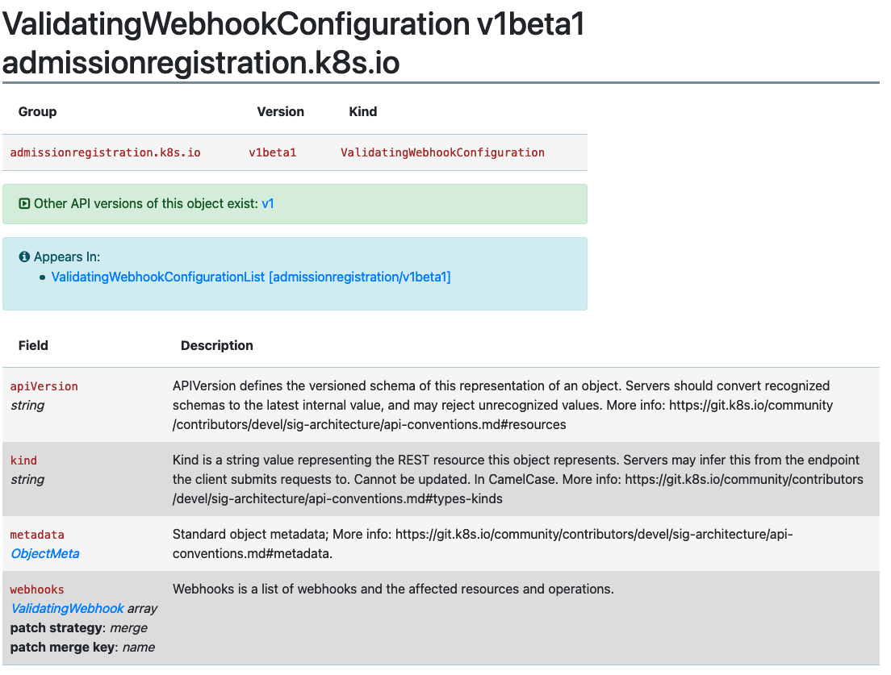

Gerando Diffs para Ignorar GitRepos Modificados
A Entrega Contínua no Rancher é alimentada por SUSE® Rancher Prime Continuous Delivery. Quando um usuário adiciona um CR de GitRepo, a Entrega Contínua cria os bundles do Fleet associados.
Você pode acessar esses bundles navegando até o Cluster Explorer (UI do Dashboard) e selecionando a seção Bundles.
Os charts do bundle podem ter alguns objetos que são alterados em tempo de execução; por exemplo, em ValidatingWebhookConfiguration, o caBundle está vazio e o certificado CA é injetado pelo cluster.
Isso faz com que o status do bundle e do GitRepo associado sejam relatados como "Modificado"

Bundle Associado

Os bundles SUSE® Rancher Prime Continuous Delivery suportam a capacidade de especificar um patch jsonPointer personalizado.
Com o patch, os usuários podem instruir SUSE® Rancher Prime Continuous Delivery a ignorar modificações de objetos e objetos inteiros.
Gerando comparePatches com fleet bundlediff
O comando CLI fleet bundlediff lê as informações de diff já presentes nos campos de status Bundle e BundleDeployment e as exibe em uma forma legível por humanos.
Ele também pode gerar um snippet diff: pronto para uso no formato fleet.yaml para que você possa aceitar a deriva observada sem construir manualmente os caminhos do JSON Patch.
Visualizando diffs
# Show all diffs across all namespaces, grouped by Bundle
fleet bundlediff
# Show diffs for a specific Bundle
fleet bundlediff --bundle my-bundle
# Show diffs for a specific BundleDeployment
fleet bundlediff --bundle-deployment my-bundle-deployment -n cluster-fleet-local-local-abc123
# Output in JSON format
fleet bundlediff --jsonA saída de texto padrão agrupa resultados por Bundle e lista cada recurso modificado ou não pronto junto com seu JSON Merge Patch:
Bundle: my-bundle
BundleDeployments with diffs: 1
━━━━━━━━━━━━━━━━━━━━━━━━━━━━━━━━━━━━━━━━━━━━━━━━━━━━━━━━━━━━━━━━━━
BundleDeployment: cluster-fleet-local-local-abc123/my-bundle-deployment
Modified Resources (1):
Resource: ConfigMap.v1 default/my-config
Status: Modified
Patch:
{
"metadata": {
"annotations": {
"timestamp": "2024-01-15T10:30:00Z"
}
}
}Gerando um fleet.yaml comparePatches snippet
Use --fleet-yaml junto com --bundle-deployment para produzir um bloco diff: que você pode colar diretamente no seu fleet.yaml. O comando converte o JSON Merge Patch observado em operações remove e as mescla com quaisquer comparePatches já configurados no Bundle, para que os ignores existentes permaneçam intactos.
fleet bundlediff \
--fleet-yaml \
--bundle-deployment my-bundle-deployment \
-n cluster-fleet-local-local-abc123Saída de exemplo:
diff:
comparePatches:
- apiVersion: v1
kind: ConfigMap
name: my-config
namespace: default
operations:
- op: remove
path: /metadata/annotations/timestampVocê pode redirecionar a saída e anexá-la ao seu fleet.yaml no Git:
fleet bundlediff \
--fleet-yaml \
--bundle-deployment my-bundle-deployment \
-n cluster-fleet-local-local-abc123 >> fleet.yamlApós você fazer o commit e push do fleet.yaml atualizado, SUSE® Rancher Prime Continuous Delivery reconcilia a mudança e o bundle transita de Modificado para Pronto. O campo em si não é revertido. SUSE® Rancher Prime Continuous Delivery simplesmente para de reportá-lo como desvio.
|
A flag |
Veja fleet bundlediff [SUSE® Rancher Prime Continuous Delivery bundlediff] para a referência completa da flag.
Ignorando modificações de objeto
Exemplo Simples
Neste exemplo simples, criamos um Service e um ConfigMap sobre os quais aplicamos um bundle diff.
Exemplo do Gatekeeper
Neste exemplo, estamos tentando implantar o opa-gatekeeper usando Entrega Contínua em nossos clusters.
O bundle opa-gatekeeper associado ao GitRepo opa está em estado modificado.
Cada caminho no CR do GitRepo tem um CR de Bundle associado. O usuário pode visualizar os Bundles e o diff associado necessário no status do Bundle.
No nosso caso, as diferenças detectadas são as seguintes:
summary:
desiredReady: 1
modified: 1
nonReadyResources:
- bundleState: Modified
modifiedStatus:
- apiVersion: admissionregistration.k8s.io/v1
kind: ValidatingWebhookConfiguration
name: gatekeeper-validating-webhook-configuration
patch: '{"$setElementOrder/webhooks":[{"name":"validation.gatekeeper.sh"},{"name":"check-ignore-label.gatekeeper.sh"}],"webhooks":[{"clientConfig":{"caBundle":"Cg=="},"name":"validation.gatekeeper.sh","rules":[{"apiGroups":["*"],"apiVersions":["*"],"operations":["CREATE","UPDATE"],"resources":["*"]}]},{"clientConfig":{"caBundle":"Cg=="},"name":"check-ignore-label.gatekeeper.sh","rules":[{"apiGroups":[""],"apiVersions":["*"],"operations":["CREATE","UPDATE"],"resources":["namespaces"]}]}]}'
- apiVersion: apps/v1
kind: Deployment
name: gatekeeper-audit
namespace: cattle-gatekeeper-system
patch: '{"spec":{"template":{"spec":{"$setElementOrder/containers":[{"name":"manager"}],"containers":[{"name":"manager","resources":{"limits":{"cpu":"1000m"}}}],"tolerations":[]}}}}'
- apiVersion: apps/v1
kind: Deployment
name: gatekeeper-controller-manager
namespace: cattle-gatekeeper-system
patch: '{"spec":{"template":{"spec":{"$setElementOrder/containers":[{"name":"manager"}],"containers":[{"name":"manager","resources":{"limits":{"cpu":"1000m"}}}],"tolerations":[]}}}}'Com base neste resumo, há três objetos que precisam de patch.
Vamos analisar esses um de cada vez.
1. ValidatingWebhookConfiguration:
A configuração de webhook de validação gatekeeper-validating-webhook-configuration possui dois ValidatingWebhooks em sua especificação.
Em casos onde mais de um elemento no campo requer um patch, esse patch se referirá a eles como $setElementOrder/ELEMENTNAME.
Com essas informações, podemos ver que os dois ValidatingWebhooks em questão são:
"$setElementOrder/webhooks": [
{
"name": "validation.gatekeeper.sh"
},
{
"name": "check-ignore-label.gatekeeper.sh"
}
],Dentro de cada ValidatingWebhook, os campos que precisam ser ignorados são os seguintes:
{
"clientConfig": {
"caBundle": "Cg=="
},
"name": "validation.gatekeeper.sh",
"rules": [
{
"apiGroups": [
"*"
],
"apiVersions": [
"*"
],
"operations": [
"CREATE",
"UPDATE"
],
"resources": [
"*"
]
}
]
},e
{
"clientConfig": {
"caBundle": "Cg=="
},
"name": "check-ignore-label.gatekeeper.sh",
"rules": [
{
"apiGroups": [
""
],
"apiVersions": [
"*"
],
"operations": [
"CREATE",
"UPDATE"
],
"resources": [
"namespaces"
]
}
]
}Em resumo, precisamos ignorar os campos rules e clientConfig.caBundle em nossa especificação de patch.
O campo webhook na especificação ValidatingWebhookConfiguration é um array, então precisamos endereçar os elementos pelos seus valores de índice.

Com base nessas informações, nosso patch de diff ficaria da seguinte forma:
- apiVersion: admissionregistration.k8s.io/v1
kind: ValidatingWebhookConfiguration
name: gatekeeper-validating-webhook-configuration
operations:
- {"op": "remove", "path":"/webhooks/0/clientConfig/caBundle"}
- {"op": "remove", "path":"/webhooks/0/rules"}
- {"op": "remove", "path":"/webhooks/1/clientConfig/caBundle"}
- {"op": "remove", "path":"/webhooks/1/rules"}2. Implantação gatekeeper-controller-manager:
A implantação gatekeeper-controller-manager é modificada, uma vez que há limites de CPU e tolerâncias aplicadas (que não estão no bundle atual).
{
"spec": {
"template": {
"spec": {
"$setElementOrder/containers": [
{
"name": "manager"
}
],
"containers": [
{
"name": "manager",
"resources": {
"limits": {
"cpu": "1000m"
}
}
}
],
"tolerations": []
}
}
}
}Neste caso, há apenas 1 contêiner na especificação do contêiner de implantação, e esse contêiner tem limites de CPU e tolerâncias adicionadas.
Com base nessas informações, nosso patch de diff ficaria da seguinte forma:
- apiVersion: apps/v1
kind: Deployment
name: gatekeeper-controller-manager
namespace: cattle-gatekeeper-system
operations:
- {"op": "remove", "path": "/spec/template/spec/containers/0/resources/limits/cpu"}
- {"op": "remove", "path": "/spec/template/spec/tolerations"}3. Implantação gatekeeper-audit:
A implantação gatekeeper-audit é modificada de forma semelhante à gatekeeper-controller-manager, com limites de CPU e tolerâncias adicionais aplicadas.
{
"spec": {
"template": {
"spec": {
"$setElementOrder/containers": [
{
"name": "manager"
}
],
"containers": [
{
"name": "manager",
"resources": {
"limits": {
"cpu": "1000m"
}
}
}
],
"tolerations": []
}
}
}
}Semelhante à gatekeeper-controller-manager, há apenas 1 contêiner na especificação do contêiner da implantação, e esse tem limites de CPU e tolerâncias adicionadas.
Com base nessas informações, nosso patch de diff ficaria da seguinte forma:
- apiVersion: apps/v1
kind: Deployment
name: gatekeeper-audit
namespace: cattle-gatekeeper-system
operations:
- {"op": "remove", "path": "/spec/template/spec/containers/0/resources/limits/cpu"}
- {"op": "remove", "path": "/spec/template/spec/tolerations"}Colocando tudo junto
Agora podemos combinar todos esses patches da seguinte forma:
diff:
comparePatches:
- apiVersion: apps/v1
kind: Deployment
name: gatekeeper-audit
namespace: cattle-gatekeeper-system
operations:
- {"op": "remove", "path": "/spec/template/spec/containers/0/resources/limits/cpu"}
- {"op": "remove", "path": "/spec/template/spec/tolerations"}
- apiVersion: apps/v1
kind: Deployment
name: gatekeeper-controller-manager
namespace: cattle-gatekeeper-system
operations:
- {"op": "remove", "path": "/spec/template/spec/containers/0/resources/limits/cpu"}
- {"op": "remove", "path": "/spec/template/spec/tolerations"}
- apiVersion: admissionregistration.k8s.io/v1
kind: ValidatingWebhookConfiguration
name: gatekeeper-validating-webhook-configuration
operations:
- {"op": "remove", "path":"/webhooks/0/clientConfig/caBundle"}
- {"op": "remove", "path":"/webhooks/0/rules"}
- {"op": "remove", "path":"/webhooks/1/clientConfig/caBundle"}
- {"op": "remove", "path":"/webhooks/1/rules"}Podemos adicionar estes agora diretamente ao bundle para testar e também fazer commit dos mesmos no fleet.yaml no seu GitRepo.
Uma vez que esses sejam adicionados, o GitRepo deve ser implantado e estar em Status "Ativo".
Ignorando objetos inteiros
Ao instalar um chart como Consul, um job chamado consul-server-acl-init é criado e, em seguida, excluído uma vez que tenha sido concluído com sucesso.
Esse chart pode ser instalado criando um GitRepo apontando para um repositório git usando um fleet.yaml como:
defaultNamespace: consul
helm:
releaseName: test-consul
chart: "consul"
repo: "https://helm.releases.hashicorp.com"
values:
global:
name: consul
acls:
manageSystemACLs: trueInstalar esse chart resultará no GitRepo reportando um status Modified, com o job consul-server-acl-init ausente, uma vez que esse job tenha sido concluído.
Isso pode ser corrigido com o seguinte bundle diff no nosso fleet.yaml:
diff:
comparePatches:
- apiVersion: batch/v1
kind: Job
namespace: consul
name: consul-server-acl-init
operations:
- {"op":"ignore"}Em alguns casos, o nome completo do job pode não ser conhecido antecipadamente, por exemplo, quando é gerado. Além disso, uma carga de trabalho dada pode criar múltiplos jobs no mesmo namespace, o que normalmente levaria a um bundle diff por job.
Para facilitar o manuseio dessas situações, os jobs também podem ser ignorados:
-
por meio de uma expressão regular em seus nomes, caso em que o bundle diff acima poderia parecer:
diff:
comparePatches:
- apiVersion: batch/v1
kind: Job
namespace: consul
name: 'consul-server.*'
operations:
- {"op":"ignore"}
-
ou especificando um campo
namevazio ou omitindo esse campo completamente, caso em que todos os jobs que residem nesse namespace (neste exemplo, no namespaceconsul) serão ignorados.
Mais informações sobre a sintaxe regex suportada aqui.
Escalonamento Horizontal de Pods
Ao lidar com Deployments ou StatefulSets referenciados por um Escalonador Horizontal de Pods, os bundle diffs não são mais necessários para tratar atualizações nas contagens de réplicas dentro do intervalo configurado do HPA. O Fleet agent filtrará automaticamente essas atualizações; como resultado, a implantação do bundle de origem não será considerada modificada.
No entanto, se o campo replicas de um Deployment ou StatefulSet estiver definido para um valor acima ou abaixo do intervalo tolerado por um HPA que o referencia, essa modificação ainda aparecerá no status da implantação do bundle de origem.
Tanto autoscaling/v1 quanto autoscaling/v2 são suportados.
Um campo minReplicas vazio em um HPA será interpretado como 1.